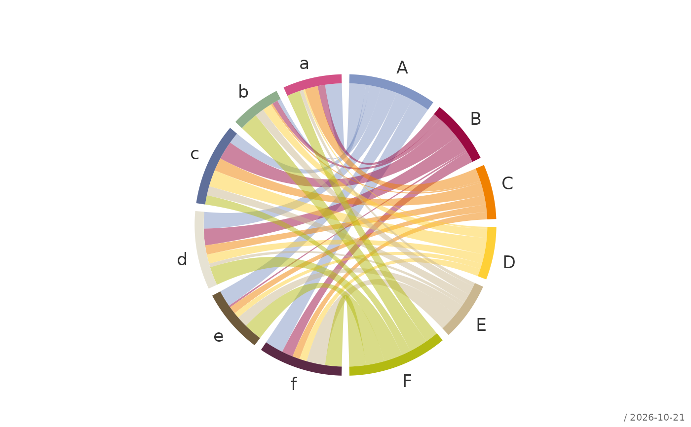
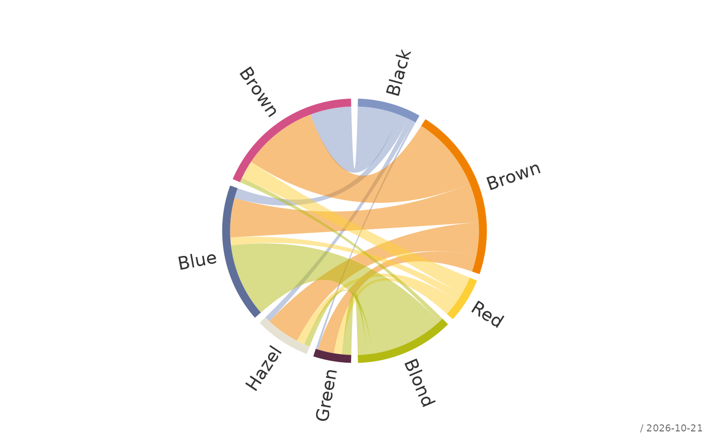
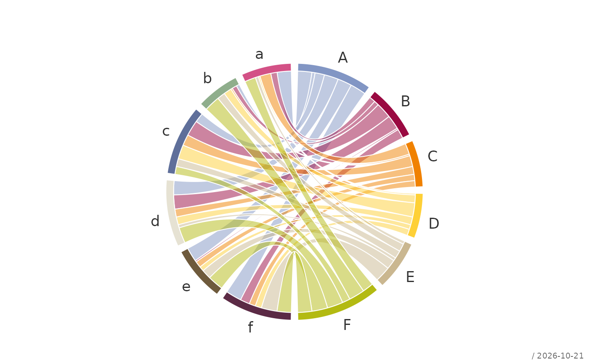

Draws a chord diagram of a two-way table: the categories of the rows lie as sectors on the right half of a circle, those of the columns on the left half, and every cell of the table is a ribbon between its row and its column sector whose width is proportional to its value.
Usage
plotCirc(
x,
main = NULL,
gap = 3,
opacity = 0.5,
sector = TRUE,
ribbon = TRUE,
labels = TRUE,
stamp = .useTheme,
...
)Arguments
- x
a numeric matrix or two-way table with non-negative entries. Rows and columns are the two sets of categories; the dimnames give the labels.
- main
main title.
NULL(default) draws none, unless the theme setsautoTitle = TRUE(see theme); the title is then the name ofx."",NAorFALSEalways suppress it and compact the top margin; any other string is used as given.- gap
gap between two sectors, in degrees.
- opacity
opacity of the default ribbon colors, between 0 and 1.
- sector
sector styling. Can be:
TRUE(default): the qualitative palette of the active theme (see theme), without border,FALSEorNULL: no sectors,a vector of colors,
a list with the elements
coland/orborder.
Colors are given for the rows followed by the columns of
xand are recycled to their number.- ribbon
ribbon styling. Can be:
TRUE(default): the color of the row sector a ribbon starts from, with the opacityopacity, without border,FALSEorNULL: no ribbons,a vector of colors, one per row of
x(recycled),a list with the elements
coland/orborder.
- labels
label styling. Can be:
TRUE(default): the row and column names ofx, written horizontally,FALSEorNULL: no labels,a character vector of labels, for the rows followed by the columns of
x,a list with the elements
labels,cex,colandlas;las = 2writes the labels radially, perpendicular to the circle.
- stamp
controls the corner stamp.
.useTheme(default) resolves togetTheme()$stamp.TRUE/FALSE/NULL, a string, or a named list forstamp().- ...
further graphical parameters passed to
par()via the internal framework.
Value
Invisibly, a list with the data frame sectors (category,
margin ("row" or "col"), total, start and end angle in radians,
color) and the label positions x and y.
Details
The size of a sector is the margin total of its category. Within a row sector the ribbons are ordered like the column sectors they lead to, within a column sector like the row sectors, both from top to bottom; this keeps crossings few. Empty cells draw no ribbon.
The plot region is enlarged as far as needed for the labels, so that long category names are not cut off.
See also
Other plot.special:
plotBinaryTree(),
plotLift(),
plotMiss(),
plotPolar(),
plotPropCI(),
plotSankey(),
plotTernary(),
plotTimeSeries(),
plotTreemap(),
plotWeb()
Examples
set.seed(1)
x <- matrix(sample(1:10, 36, replace = TRUE), nrow = 6,
dimnames = list(LETTERS[1:6], letters[1:6]))
plotCirc(x)

# a contingency table, radial labels
plotCirc(HairEyeColor[, , "Female"], labels = list(las = 2))

# own colors and white borders
plotCirc(x,
sector = list(col = hcol(), border = "white"),
ribbon = list(border = "white"))
